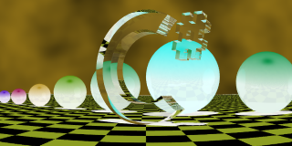
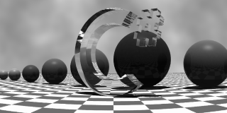
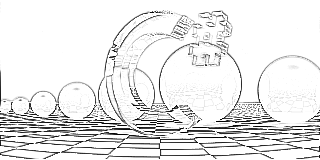
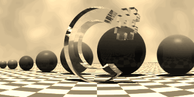
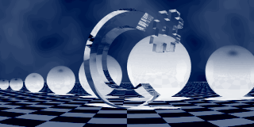
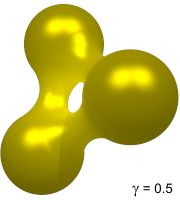
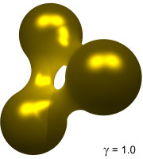
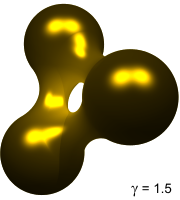

The Image Window supports several easy non-destructive transformations on a rendered image and on its edge map:
These options are available both in the Image Window's toolbar and in its context menu:
Color inversion
Sometimes you'll find convenient to take a look at the negative of a generated image. If that's what you want, you can execute the Invert colors menu command:
 |
|  |
Desaturation
You can also use the Desaturate menu command to create a grayscale bitmap from the rendered image.
|
|  |
You can combine the commands for desaturation, edge detection and color inversion as you need. For instance, the following image has been obtained by desaturating and inverting an edge map:
|  |
Sepia toning
Sepia toning is closely related to desaturation, except that, instead of using shades of gray, the transformed image uses a brownish palette, as in old photographs.
|  |
|  |
Note that the second image above combines sepia toning and color inversion.
Gamma correction
Gamma correction is, by far, the most important display option in XSight RT. It's a non-linear transformation that changes color channels intensities by the same amount. As a consequence, the resulting image may be either lighter or darker than the original, while preserving hue and saturation.
Gamma correction is controled by a single numeric parameter, that represents the power used to scale intensities. For instance, a gamma correction of 1.0 leaves the bitmap unchanged. The following image shows the same image, using three diferent gamma values:
|  |  |  |
An important fact about gamma correction is that it always preserves pure white and black colors.
 Warning Warning |
|---|
| Gamma correction can cause color banding in certain scenes, especially when extreme settings are used. Suppose you have a scene background featuring two near colors only. Gamma correction could separate enough those colors so the difference between their respective zones would become noticeable. This is a consequence of having only 256 intensity levels per color channel. A future XSight RT version could integrate gamma correction with rendering, in order to avoid this limitation. |
See also
Home | Image Window | Image source | Using the Ray Editor | Editor Window | Motion Blur | Animation Form | Scene Wizard | Noise Generator | XSight RT Options